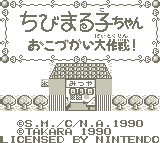

Chibi Maruko-chan - Gameboy Games
Chibi Maruko-chan: o-kodzukai DAISAKUSEN

Company:
Takara
Date Released:
1990
Genre:
Action RPG
The subtitle
o-kodzukai DAISAKUSEN
means
The big allowance fight!
.
Anime Video Game Resource Center © 1998 by
Luis A. Cruz